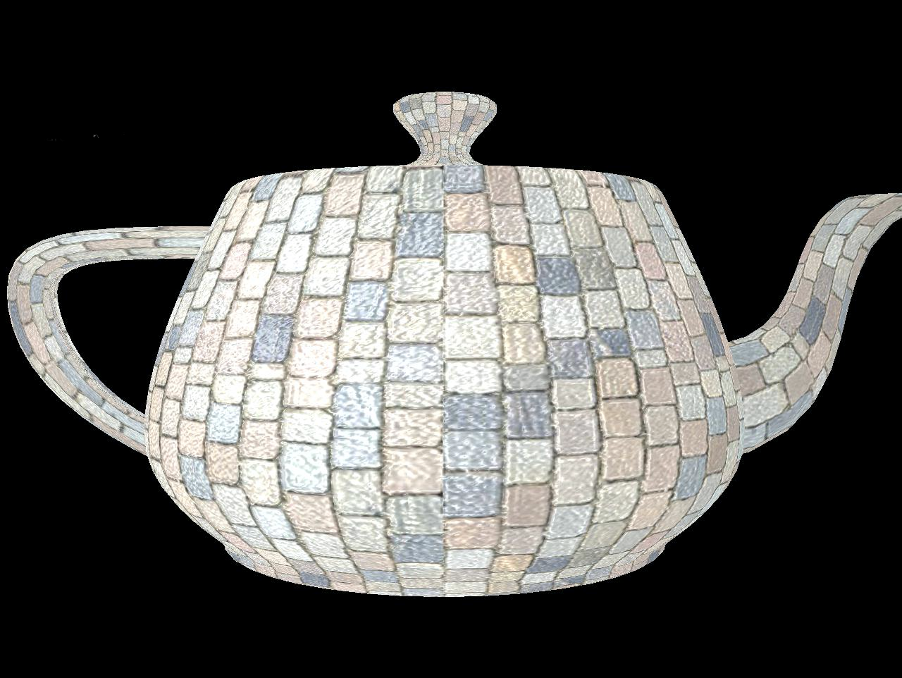
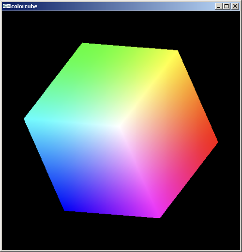

Magic GPU：画一个红色三角形，你要告诉它什么？
假设有一个 magic_gpu，请写伪代码：怎样让它在屏幕上画一个红色三角形？
不要写真实WebGL函数，只写“你认为必需的步骤”。
把大家的答案整理成现代GPU通用流程
今天的全部内容都挂在这条链上。
Vertex ≠ Point：位置只是顶点的一个属性
Position
位置
Color
颜色
More Attributes
法向量、纹理坐标、温度……
Vertex 是一个带属性的数据记录；三个位置数据本身并不自动等于一个三角形。
同一组顶点，MODE不同，几何含义就不同
POINTS
6个独立点
LINES
(0,1) (2,3) (4,5)
TRIANGLES
(0,1,2) (3,4,5)
结合 LINE_STRIP、TRIANGLE_STRIP；先画结果，再运行代码验证。
WebGL真正直接支持的是少量基本图元
Point
一个顶点定义一个点。
Line
LINES / LINE_STRIP / LINE_LOOP
Triangle
TRIANGLES / STRIP / FAN
为什么现代图形硬件偏爱三角形
共面
三个点天然确定平面。
凸
内部定义简单。
稳定
插值和光栅化容易实现。
硬件优化
GPU围绕三角形高吞吐设计。
多边形要交给GPU，先把它变成三角形
“坏”的划分
连接远距对角线 · 产生细长扁平三角形
“更好”的划分
连接短距对角线 · 三角形形状更均衡
哪种划分产生的三角形更均衡？为什么“避免扁长三角形”通常更好？
凸多边形与非凸多边形
Convex（凸多边形）
任意内部两点连线必在内部 · 三角化相对简单
Concave（凹多边形）
存在内部两点连线穿出外部 · 需耳切法等算法
WebGL不负责替你完成一般多边形三角化。
多边形的三个基本性质
Simple
边不自相交，内部/外部定义明确。
Convex
任意内部两点连线仍在内部。
Planar
所有顶点位于同一平面。
三角形天然满足这些条件，因此最适合作为GPU基本面图元。
凸多边形可以怎样递归三角化？
Fan-like strategy（顶点扇策略）
固定单顶点引对角线 · $n$ 边凸多边形剖为 $n-2$ 个三角形
General polygon（耳切法 Ear Clipping）
检测凸耳逐个切除 · 递归剖分非凸或一般多边形
CPU数据怎样真正进入 GPU？
GPU需要连续、明确类型的数据布局，而不是直接理解任意JavaScript对象。
普通数组 vs 类型化数组
JS Array
var p = [x, y];灵活、动态，可以嵌套对象。
Float32Array
var p = new Float32Array([x, y]);连续、固定类型，更接近GPU需要的数值内存。
三步：创建 → 绑定 → 上传
create
创建缓冲区var buffer = gl.createBuffer();bind
绑定当前缓冲gl.bindBuffer(gl.ARRAY_BUFFER, buffer);upload
上传数据到 GPUgl.bufferData(gl.ARRAY_BUFFER, data, gl.STATIC_DRAW);三个方向：应用程序→Vertex、Vertex→Fragment、Fragment→Framebuffer
应用程序 ➜ Vertex CPU → GPU
将几何顶点数据与全局参数从 JS 传送到 GPU 着色器。
-
顶点属性 (
in)：位置、法线等每顶点专有数据，通过 Buffer 批量传入。 -
统一变量 (
uniform)：变换矩阵、时间等所有顶点共享的全局常量。
Vertex ➜ Fragment 光栅化插值
顶点计算结果跨阶段传递，在图元内部插值生成片元数据。
-
输出声明 (
out)：Vertex Shader 将变换后的颜色或坐标向外输出。 -
硬件插值 (
in)：光栅化器按重心坐标平滑插值，作为 Fragment 的输入接收。
Fragment ➜ Framebuffer 像素落地
片元着色器计算出的最终色彩写入显存帧缓冲并呈现上屏。
-
最终颜色 (
out)：Fragment Shader 经光照与纹理计算，输出片元 RGBA 颜色。 - 测试与混合：经深度测试、模板测试并混合后，写入帧缓冲区最终在 Canvas 上呈现。
掌握这三个流动方向，就理解了从“JavaScript 数组”到“屏幕彩色像素”的完整着色器数据通信网络。
三个方向：应用程序→Vertex、Vertex→Fragment、Fragment→Framebuffer
应用程序 ➜ Vertex
Vertex ➜ Fragment
Fragment ➜ Framebuffer
GLSL：为GPU并行计算设计的 C 风格语言
内建数值类型
float / int / bool
vec2 / vec3 / vec4
mat2 / mat3 / mat4
为什么向量/矩阵是一等类型？
图形学大量操作位置、颜色、方向、变换；GPU硬件也针对这些运算优化。
应用程序 → Vertex Shader：顶点属性
Shader
#version 300 es
in vec4 aPosition;
in vec4 aColor;JavaScript
loc = gl.getAttribLocation(program,"aPosition");
gl.vertexAttribPointer(loc,2,gl.FLOAT,false,0,0);
gl.enableVertexAttribArray(loc);Vertex Shader 的输出会经过光栅化插值
Vertex Shader
out vec4 vColor;
vColor = aColor;Fragment Shader
in vec4 vColor;
out vec4 fColor;
fColor = vColor;三角形内部的片元颜色来自顶点属性的插值。
应用程序 → Shader：所有顶点/片元共享的值
时间
uTime
变换矩阵
uModelView / uProjection
统一颜色/参数
uColor / light params
顶点位置、每顶点颜色、当前时间、变换矩阵、片元最终颜色：分别应该放在哪里？
Swizzling 与向量操作
vec4 a;
a.xy = vec2(1.0, 2.0);
vec3 rgb = a.rgb;同一向量分量可以用 xyzw / rgba / stpq 三套语义名字访问。
这使颜色、位置、纹理坐标代码更直观。
数据类型：GLSL为什么把向量和矩阵做成基本类型？
| 类别 | 示例 | 常见用途 |
|---|---|---|
| 标量 | float / int / bool | 系数、索引、逻辑 |
| 向量 | vec2 / vec3 / vec4 | 位置、方向、颜色、纹理坐标 |
| 矩阵 | mat2 / mat3 / mat4 | 坐标变换 |
| 采样器 | sampler2D | 纹理读取 |
为什么 GLSL 不需要传统 C 指针？
GPU执行模型
大量Shader invocation并行执行，数据输入/输出由流水线接口明确管理。
编程结果
向量、矩阵本身就是值类型；Shader通过 in/out/uniform/buffer 等接口访问数据，而不是依赖通用指针操作。
WebGL 2 / GLSL ES 3.0：先理解 in / out / uniform
in
当前Shader阶段的输入。
out
当前Shader阶段的输出。
uniform
一次绘制中共享、由应用程序设置的数据。
WebGL 1.0 中常见 attribute / varying；本课程代码以 WebGL 2 的 in / out 为主。
变量命名与交叉访问：让Shader代码表达“语义”
命名建议
aPosition：vertex attributevColor：阶段间插值变量uMatrix：uniformfColor：片元输出
vec4 a = vec4(1.0,2.0,3.0,4.0);
vec2 p = a.xy;
vec3 c = a.rgb;
vec4 b = a.yxzw;两类Shader各负责什么？
Vertex Shader
- 逐顶点执行
- 输出位置到
gl_Position - 处理/生成其它顶点属性
Fragment Shader
- 逐片元执行
- 计算最终输出颜色
- 可实现光照、纹理、程序纹理等
Shader可以改变位置，也可以改变外观
Morphing
Wave

Texture / Material

三角形三个顶点分别是 R / G / B，中间是什么？
先画出你认为的内部颜色分布，再运行程序；最后解释为什么不是Fragment Shader“猜”的。
颜色作为顶点属性或统一参数传入
Per-vertex
每个顶点携带不同颜色 → 光栅化插值。
Uniform / Constant
整个对象或一次Draw Call使用同一颜色。
RGB：显示系统中的常用数值表示
RGBA
R/G/B 通常使用 0.0–1.0 浮点表达；A 用于透明/混合等效果。
帧缓存
经典真彩色常按每个颜色分量8位存储；现代渲染也常使用更高精度格式。
颜色索引：今天少见，但“查表”思想仍很重要
Indexed Color
像素保存调色板索引，而不是完整RGB。
现代延续
伪彩色可视化、调色板、LUT颜色映射等仍使用类似思想。
颜色平滑：片元属性从哪里来？

Smooth shading
顶点颜色在光栅化阶段插值到片元。
Flat shading
整个图元使用统一的离散属性。
先判断，再让AI修
Buggy Shader
in vec3 color;
out vec4 fColor;
void main(){
fColor = color;
}学生任务
- 先指出类型问题
- 让AI给出修改
- 说明为什么修改后类型匹配
要求AI“不要重写整段，只解释最小修改及原因”。
今天建立的是一条“数据流”
三句话说明
1
为什么顶点不等于点？
2
为什么GPU需要Buffer？
3
Vertex Shader 与 Fragment Shader 的区别？